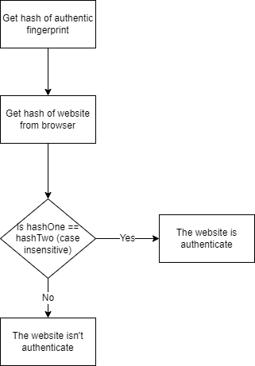

HTTPS is a secure version of HTTP, the primary protocol to send data between a web browser and a website. HTTPS encrypts this protocol, to make it more secure to handle sensitive information, like medical records, credit cards, and passwords. HTTPS either encripts through Transport Layer Security which uses an asymmetric public key infrastructure. This system uses two different keys:the private key which is controlled by the owner of a website and is used to decrypt information encrypted by the public key. The public key is available to everyone who wants to interact with the website. (Cloudflare, n.d.)
An HTTPS Proxy Appliance is a software that plants it's own certificate authority in a browser or computer. Then, anytime a website is accessed, the application replicates the website and adds its own web server certificate. The application then verifies the website's faked certificate with it's own planted certificate authority. The application essentially creates a perfect replica of the website that appears to be authenitcated, so that any interaction between the user and website can be watched. This includes passwords, credit card information, anything that a user would normally use with a website (Gibson, n.d.).
If an HTTPS Proxy Appliance is unknowingly running without the user's knowledge, it can be classified as a Man-in-the-middle attack. A MITM attack is where an intruder intercepts and alters or tracks the communicated data by posing as an entity involved in the communication. In this case, the intruder poses as the website, intercepting the HTTP protocol that transfers data between the user and website. In an MITM attack, the user's sensitive information is intercepted, sometimes without them realising (Computer Security Resource Center, n.d.).
A cryptographic hash is series of charactes that is generated by running the certificate through an mathematical algorithm. The important property of hashes are that if the certificate is altered in any way, the hash also changes. In this way, hashes are digital "fingerprints" that leave traces if a certificate is altered. Even if the browser authenticates the website, if a user compares the hash to the actual authenticate hash of the website, they can see if the certificate has been altered (Gibson, n.d.).
Bigger companies may have multiple web servers to handle a large load of users, which may mean that the website has multiple certificates. Therefore, comparing hashes can sometimes result in a false positive. Users can use extended validation through browsers like Chrome or Firefox to which verify EV certificates(Gibson, n.d.).
It isn't morally right or secure to intercept user's information without their consent. If a school or internet service provider wants to monitor your activity for safety, they have a moral obligation to tell you. If the user wants, they can disagree with the security practices and move to a entity with a security policy that aligns with the user.
Algorithm to compare an authentic fingerprint with another retrieved from a browser.
Cloudflare. (n.d.). What is HTTPS? Cloudfare Learning Center. Retrieved August 24, 2022, from https://www.cloudflare.com/learning/ssl/what-is-https/
Gibson, S. (n.d.). GRC | SSL TLS HTTPS web server certificate fingerprints.Gibson Research Corporation. Retrieved August 24, 2022, from https://www.grc.com/fingerprints.htm#top
National Institute of Standards and Technology, United States Department of Commerce. (n.d.). Glossary : CSRC. Computer Security Resource Center Glossary. Retrieved August 24, 2022, from https://csrc.nist.gov/glossary/term/man_in_the_middle_attack